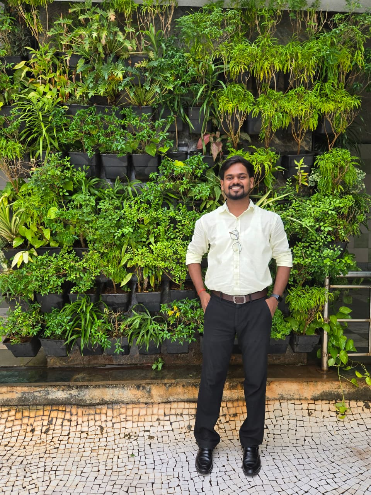

↗
↗AWS Infrastructure Monitoring Dashboard
React · Node.js · AWS SDK · CloudWatch
2026
Mohan VishwakarmaSoftware engineer / cloud builder
I build reliable backend systems, cloud tools, and web applications for teams solving real problems.
↓Selected work / 2023—26
Cloud visibility, workflow automation, and responsive web tools built with practical engineering in mind.
Experience / 02
Production systems teach you to be precise, calm, and useful when the stakes are high.
Unified Collaboration Services · Mumbai
Support enterprise collaboration platforms including Cisco Webex, Zoom, and Poly across production environments. Troubleshoot software, hardware, audio/video, connectivity, and networking issues while performing root cause analysis and incident management.
Develop internal dashboards and web applications with HTML, CSS, JavaScript, React.js, and backend technologies. Work with AWS, Git/GitHub, Docker, Jenkins, and CI/CD workflows to deploy, maintain, and improve operational tools.
Toolkit / 03
Python · JavaScript · Bash · Shell scripting · OOP · Data structures
Node.js · Express.js · Flask · REST APIs · JWT · MySQL · MongoDB · Oracle
AWS EC2 · S3 · IAM · CloudWatch · Docker · Kubernetes · GitHub Actions · Jenkins · Ansible
Linux · Windows · TCP/IP · HTTP/HTTPS · DNS · DHCP · LAN/WAN · Monitoring · Incident management
OpenAI API · Postman · VS Code · Cisco Webex · Zoom · Microsoft Teams · Poly
A little context
I’m Mohan, a software and technical support engineer based in Mumbai. I work across Python, backend development, cloud infrastructure, and production systems, with a focus on clear debugging, dependable tools, and solutions that help teams move faster.
Get in touch ↗Open to the next challenge
04 / 04